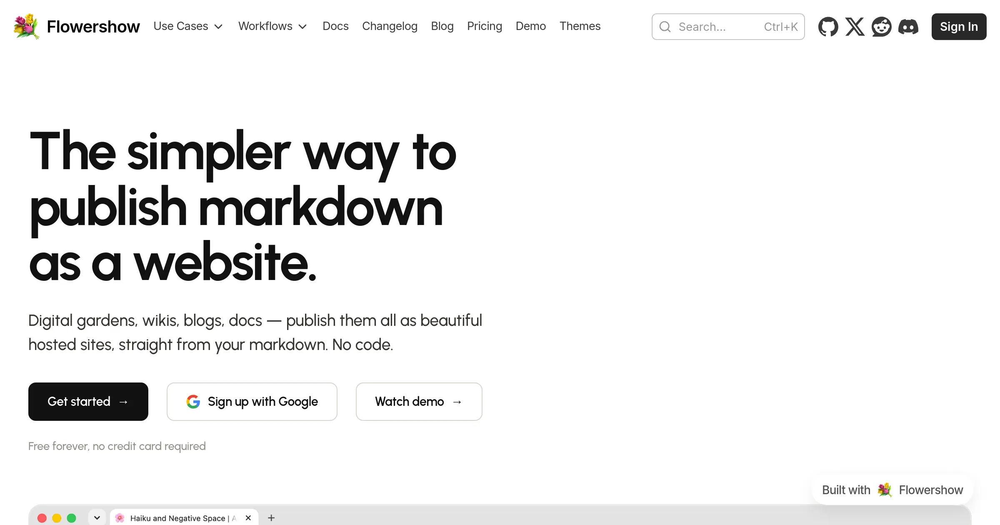
Flowershow
Turn Markdown into beautiful websites, digital gardens and documentation.
flowershow.appTools for sharing knowledge. Ideas for making sense of the world. Communities for changing it.

Turn Markdown into beautiful websites, digital gardens and documentation.
flowershow.app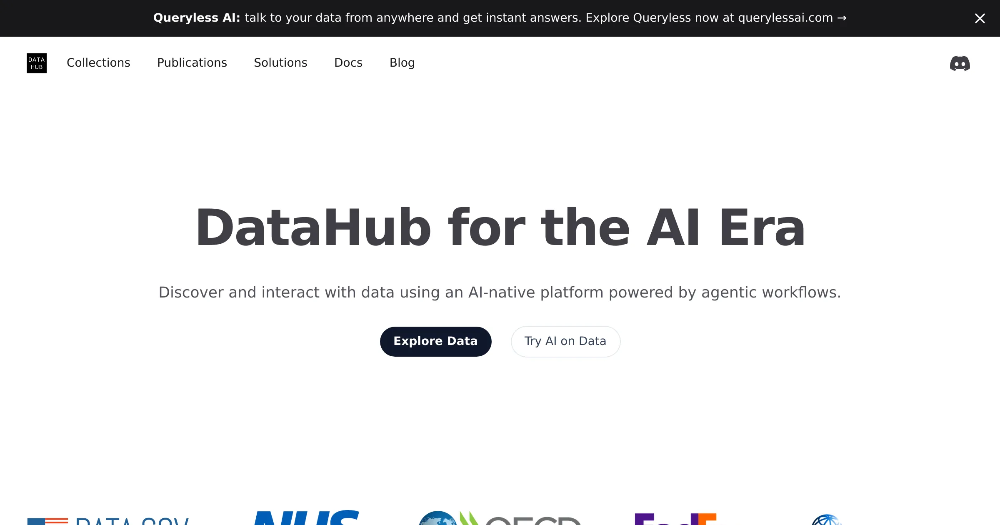
Discover, publish and share data that others can build on.
datahub.io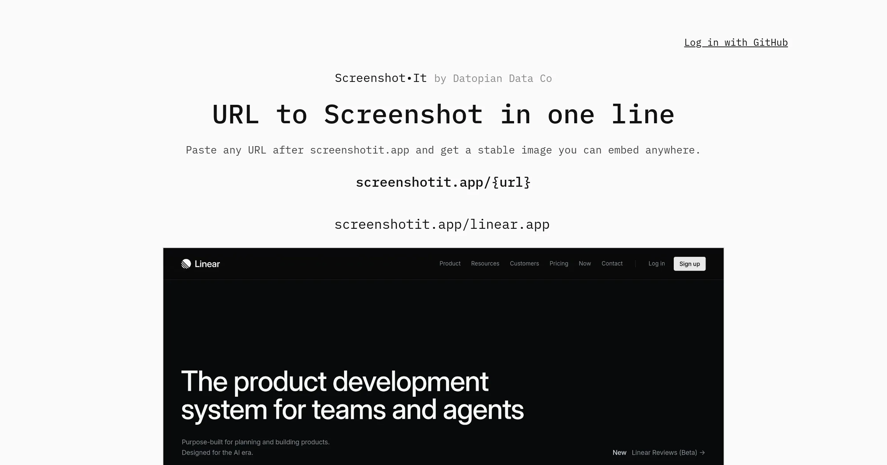
A website screenshot, as a URL. Capture a page and embed it anywhere.
screenshotit.app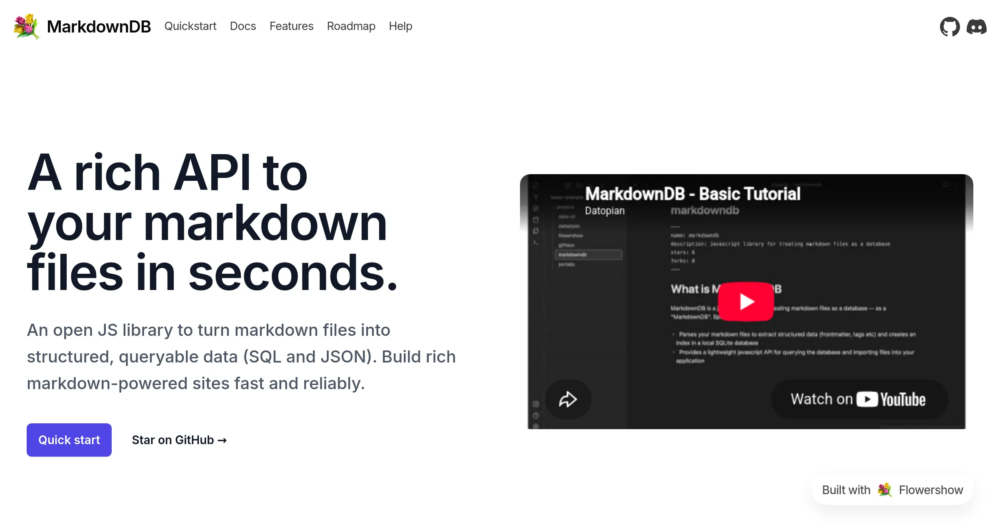
Turn a folder of Markdown files into a queryable database.
markdowndb.com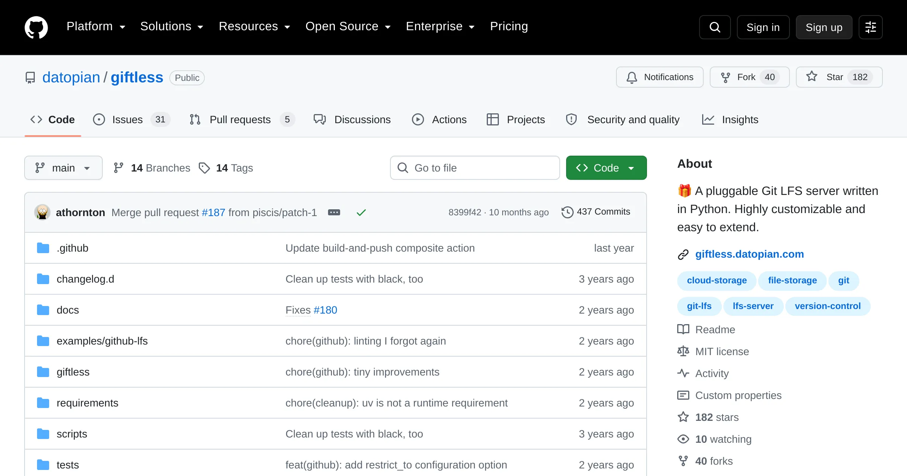
Git LFS hosting with your own storage, without platform lock-in.
giftless.app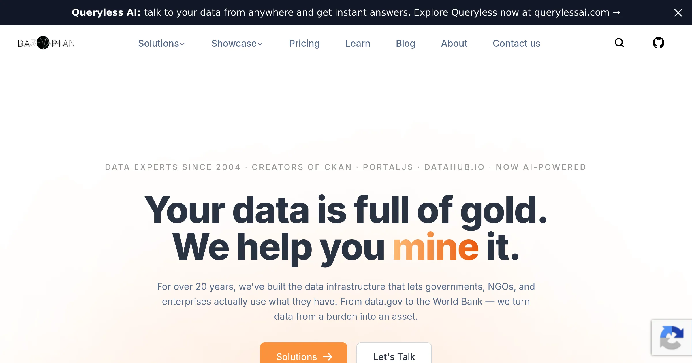
Data platforms, portals and infrastructure that make information useful.
datopian.com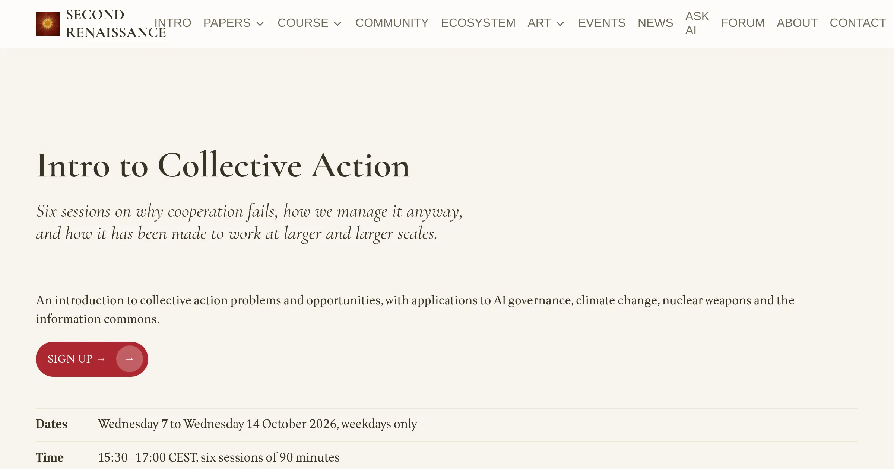
A course on why cooperation fails—and how we make it work at larger scales.
secondrenaissance.net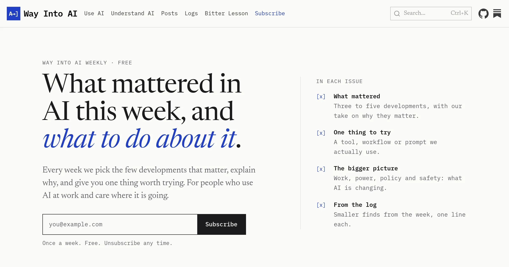
A practical guide to going from curious to capable with AI.
wayintoai.com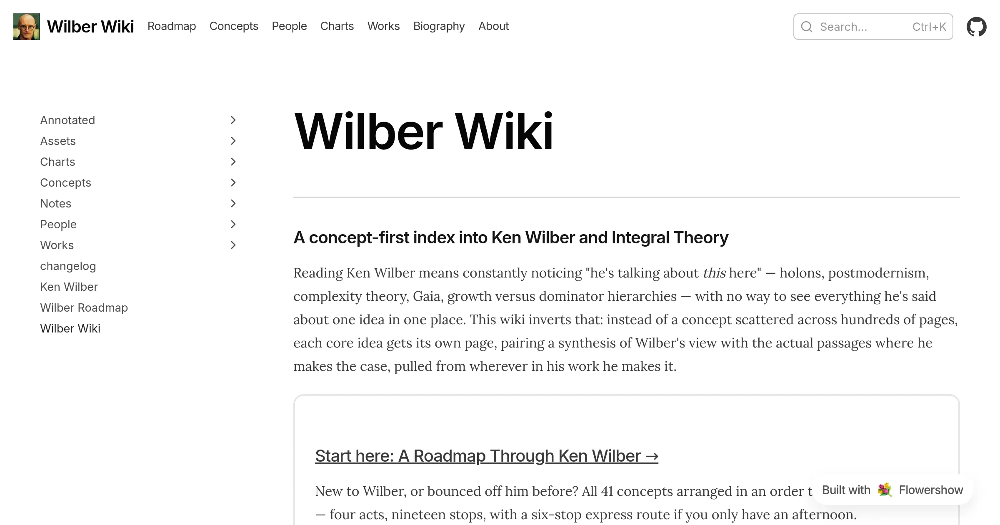
Explore the concepts and connections in Ken Wilber’s integral theory.
wilber.wiki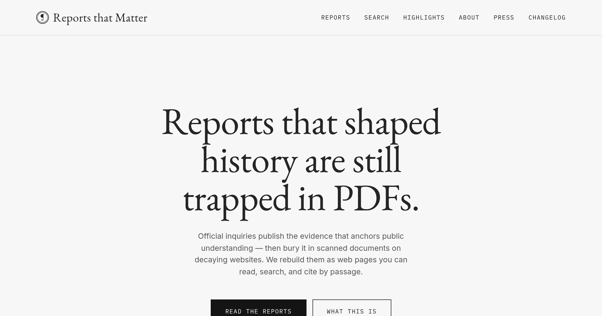
Important public reports, made discoverable, readable and linkable.
reportsthatmatter.org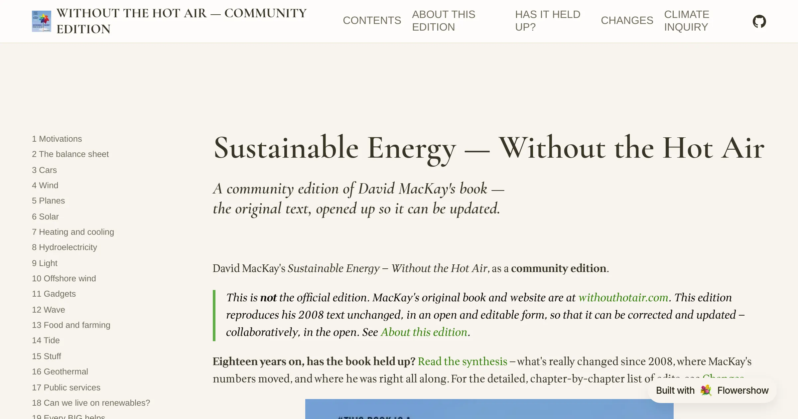
Clear thinking about climate, energy and the numbers that matter.
withouthotair.org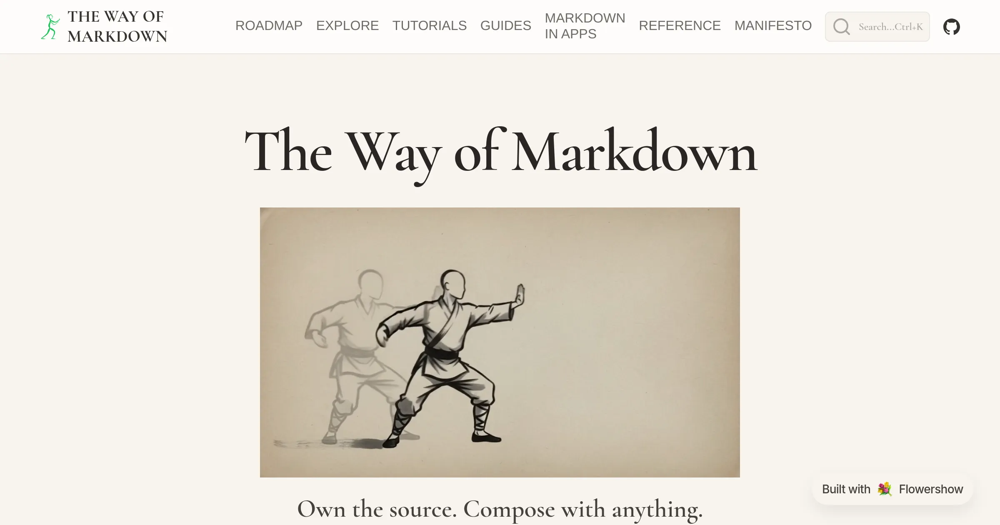
Discover the power of plain text for writing, publishing and sharing knowledge.
wayofmarkdown.com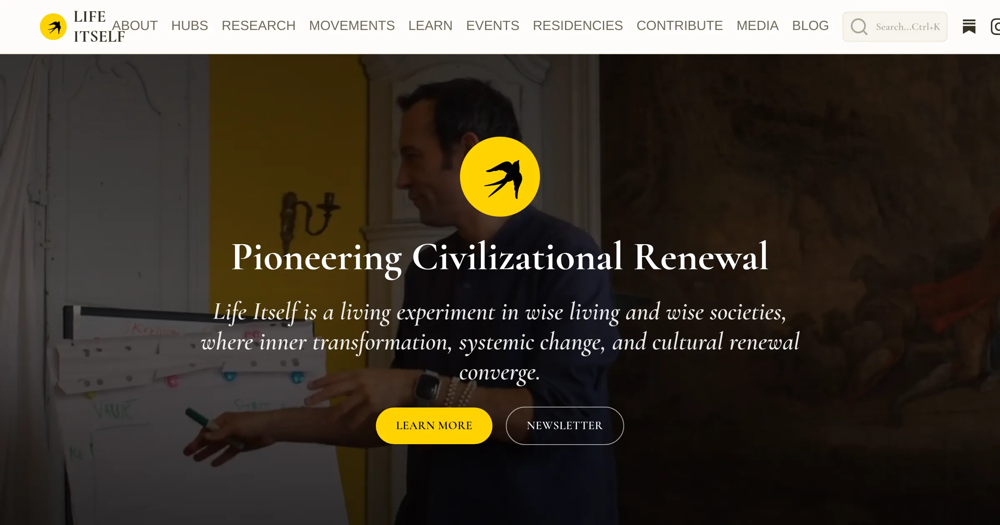
Hubs, research and practice for a wiser, weller world.
lifeitself.org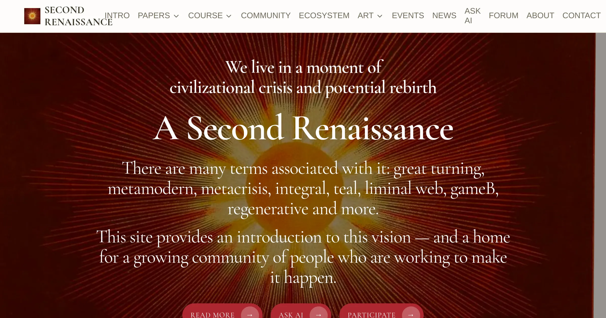
Exploring cultural renewal and the possibility of a new civilisational chapter.
secondrenaissance.net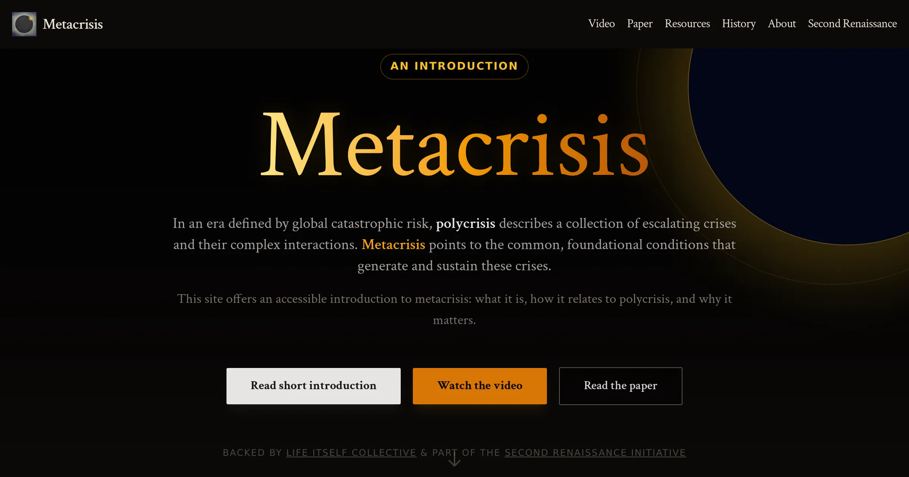
An introduction to the connected crises beneath our global challenges.
metacrisis.info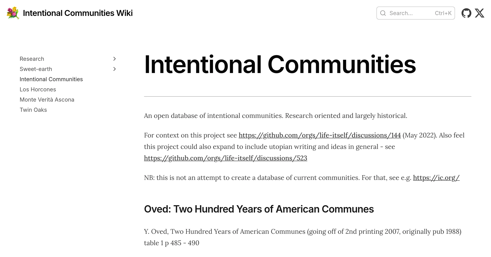
A shared knowledge base about intentional communities and how they work.
ic.lifeitself.org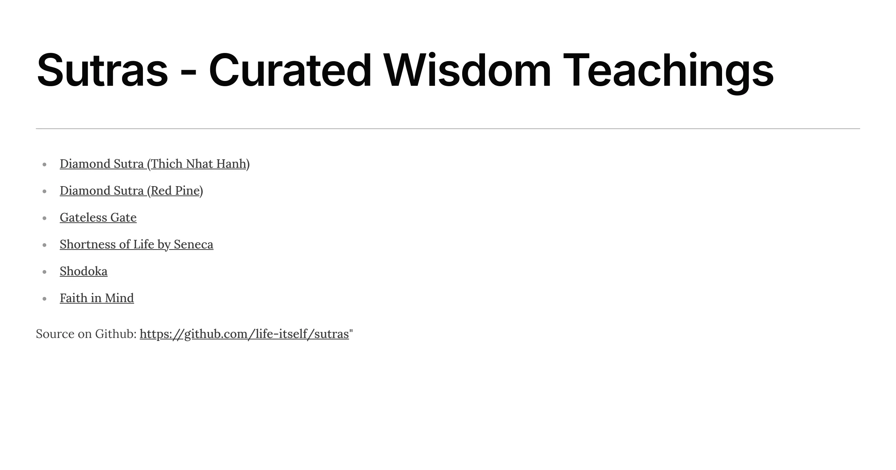
An accessible library of wisdom teachings, collected for exploration and practice.
sutras.lifeitself.org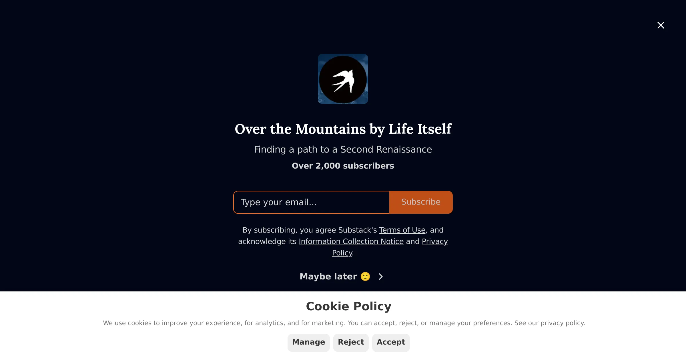
Writing and conversations on civilisational renewal and the emerging Second Renaissance.
overthemountains.substack.com